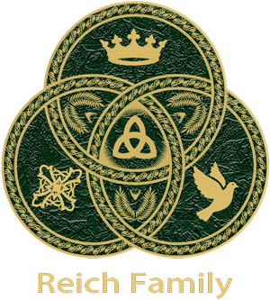

110 16th Street Suite 1460 Denver Colorado 80202-5269 Chat: Facebook Messenger Voice: (303) 565-5966
Unit 166301 PO Box 7169 Poole BH15 9EL United Kingdom Chat: Instagram DM, XChat Text: (866) 98 REICH
Hannah's Amazing Jewish Heritage
In modern Rabbinic Judaism, the traditional method of determining Jewishness relies on tracing one's maternal line. According to halakha, the recognition of someone as fully Jewish requires them to have been born to a Jewish mother (Mishnah Kidushin 3:12; Shulchan Aruch, Even HaEzer 8:5). Polly Hannah's memory should focus on her wonderful life and incredible Jewish heritage - not on the horrible crime that took her from her loving family and friends.
(Reich Family) 10/15/24 (Updated 08/03/26) - Polly Hannah Klaas was born on January 3rd 1981 in Fairfax, Marin County, California to Marc Klaas and Eve Reed Klaas. Polly's mother later divorced Marc Klaas and remarried Alan Nichol. Polly Hannah lived most of her life in Petaluma California with her biological sister, Annie Nichol, and her stepsister, Jess Nichol.
On October 1st 1993, twelve year old Polly Hannah Klaas was abducted from her Petaluma home. A grand search was conducted for two months to bring Polly Hannah home to her family. On November 30th 1993, Richard Allen Davis was arrested for a parole violation. On December 4th 1993, over two months after Polly Klaas was abducted, Davis led investigators to her remains in Cloverdale California - forty-eight miles north of her home in Petaluma.
Polly Hannah's grandfather, Dr Eugene Reed, was brought to our attention by a fellow researcher. He had discovered that Dr Reed's original last name was Rosenberg. At that point, we immediately became interested in the Jewish heritage of Polly Hannah's maternal lineage. We came to learn that Dr Eugene Reed had an incredible life and made amazing contributions to society. What a brilliant man he was. Eugene and Joan's courage in escaping the Holocaust in Europe is one of survival and inspiration.
We have conducted matrilineal genealogical research on the grandparents and ending with the great grandparents of Polly Hannah Klaas. The theme of our research was one of establishing her Jewish heritage. We have published our findings for members of families Rosenberg, Wallach, Grünfeld, and Hostovsky.
What follows are the family lines of Polly Hannah's grandparents, Dr Eugene Rosenberg Reed and Joan Grünfeld Reed. The family lineage of Polly Hannah's grandfather bears the heading Familie Rosenberg. The family lineage of Polly Hannah's grandmother bears the heading Familie Grünfeld.
EVE REED (Polly's Mother - Familie Rosenberg-Reed) - Eve Reed was born in 23 February 1949 in Brooklyn New York to Dr Eugene Reed and Hannerl Joan Josefine Grünfeld Reed. In the 1950 U.S. Census, one year old Eve(n)lyn lived with her parents, Eugene Reed and Hannerl Joan Josefine Grünfeld Rosenberg Reed, in the home of her grandparents, Markus Rosenberg and Taube Toni Wallach Rosenberg.
At 28 years old, Eve Reed married Marc Klaas in San Francisco California in 1977. They had one daughter. Polly Hannah Klaas was born on January 3rd 1981 in Fairfax, Marin County, California to Marc Klaas and Eve Reed Klaas. Eve later divorced Marc Klaas. Eve met Alan Nichol because her daughter Polly Hannah had befriended Nichol's daughter Jess in the local park. Eve later married Polly Hannah's playmate's father, Alan Nichol. At that time, Eve lived in Petaluma California. Eve and Alan Nichol had a biological daughter named Annie Nichol - the half-sister of Polly Hannah Klaas.
DR EUGENE ROSENBERG REED (Polly's Grandfather - Familie Rosenberg-Reed) - Eugene Reed was born Eugene Rosenberg on 12 October 1919, in Vienna Austria, to Markus Rosenberg and Taube (Toni) Wallach Rosenberg. He had a brother named Edward Rosenberg who was born on 30 January 1923 in Vienna Austria.


Eugene met Hannerl Josefine Grünfeld in Vienna Austria. Hannerl played piano. Eugene played the violin. The couple became engaged. Hannerl was the daughter of Dr Rudolf Grünfeld and Ida Hostovsky Grünfeld. Hannerl's parents were married on 7 February 1909 in Vienna Austria at the Jewish temple, Stadttempel. Hannerl had a sister named Ruth Harriet Grünfeld. Ruth married Dr Ernest Freed.
When the Nazis occupied Austria, Eugene and his family, along with his fiancée Hannerl, fled for their lives and found refuge with relatives in the UK. They left with Eugene's parents, Markus and Taube along with Eugene's brother Edward and immigrated to England, living in London. Eugene and Joan immigrated from Liverpool England to the United States on November 29th 1943, arriving in Boston Massachusetts on the passenger ship, the Empress of Australia. At this point, Hannerl was known as Joan. Eugene attended university in London during the blitz of WWII. He earned a bachelor of science at the University of London in 1941. Eugene married Hannerl Josefine Joan Grünfeld on May 17th 1942 in London England. Eugene was an Electronic Engineer. Joan was a Dressmaker.
Eugene Rosenberg filed a Declaration of Intention with the Immigration and Naturalization Service (INS), U.S. Department of Justice, on January 29th, 1944. He had seven years to complete naturalization. Family records indicate he did become a U.S. citizen, though no official Certificate of Citizenship has been located. Joan Rosenberg filed a Declaration of Intention with the Immigration and Naturalization Service (INS), U.S. Department of Justice, on January 29th, 1944. She had seven years to complete naturalization. Family records indicate she did become a U.S. citizen, though no official Certificate of Citizenship has been located. They lived in Brooklyn New York at 1523 Union Street with Eugene's parents - Markus and Taube (Toni) Rosenberg. Eugene registered as Eugene Reed for the draft in the U.S. on December 7th 1943. This is the first time we can find that he used the Reed surname. Eugene served in the U.S. Army during WWII.
In the 1950 US Census, Eugene and Joan Reed lived with Eugene's parents and their one year old daughter, Eve, in the upstairs apartment at 1523 Union Street, Brooklyn New York. Eugene's father Markus Rosenberg was listed as the head of the house. The granddaughters of Eugene and Joan Reed, were Polly Hannah Klaas and Annie Nichol. The Reeds last lived in Pebble Beach California.
In the National Academies Press, C. Paul Robinson wrote that Eugene D. Reed was a pioneering leader in microelectronics and integrated circuits at AT&T's Bell Laboratories and subsequently at AT&T's Sandia National Laboratory in New Mexico, where he led one of the major organizations, Component Development and Engineering, with a staff of nearly 1200 professionals. Dr. Reed died October 29, 2008, in Pebble Beach, California, at the age of 89. Throughout his career, Eugene D. Reed made many such exceptional contributions to US technology and to the security of our nation and the world. His life mirrored those very words of exceptional service to our nation. To read more about this extraordinary man, visit the Eugene Reed Memorial Site.
MARKUS ROSENBERG (Polly's Great Grandfather - Familie Rosenberg) - Markus Rosenberg was born on February 22nd 1884 to Leib Rosenberg and Klara Kornberg Rosenberg in Woloczysk, Russia - what is now Volochysk (Волочиськ) in western Ukraine. Markus Rosenberg married Taube Wallach at the Jewish temple Militärseelsorge on May 16th 1918 in Vienna Austria. According to their U.S. naturalization documents, Markus and Tauba were married on January 24, 1918. However, two primary marriage records at JewishGen and Gesher Galicia indicate the actual date was May 16, 1918. The reason for this discrepancy is unknown. During the First World War, Markus served as a K.u.K. Oberleutnant in der Reserve, a First Lieutenant in the Austro-Hungarian Reserve forces. He fought for the Central Powers (Austria-Hungary, Germany, the Ottoman Empire, and Bulgaria) against the Allied Powers (Britain, France, Russia, Italy, and later the United States). Born in Galicia, his hometown's proximity to the Russian border suggests he may have seen action on the Eastern Front. Markus and Taube had two sons named Eugene and Edward Rosenberg. Markus and Taube left Vienna Austria to escape German persecution of the Jews during WWII. They left with their two sons Edward and Eugene, along with Eugene's fiancee and immigrated to England, living in London. Markus and Taube (Toni) immigrated to the United States on October 28th 1940. Markus Rosenberg filed a Petition for Naturalization with the Immigration and Naturalization Service (INS), U.S. Department of Justice, on November 5, 1941. This was the final step in the naturalization process. Family records indicate he did become a U.S. citizen, though no official Certificate of Citizenship has been located.
TAUBE TONI WALLACH ROSENBERG (Polly's Great Grandmother - Familie Wallach-Rosenberg) - Taube Wallach was born on January 18th 1893 to Isak Wallach and Perl Liebling in Podwoloczysk Galicia, Austro-Hungarian Empire - what is now Pidvolochysk, Ukraine. Taube Wallach married Markus Rosenberg at the Jewish temple Militärseelsorge on May 16th 1918 in Vienna Austria. According to their U.S. naturalization documents, Markus and Tauba were married on January 24, 1918. However, two primary marriage records at JewishGen and Gesher Galicia indicate the actual date was May 16, 1918. The reason for this discrepancy is unknown. Taube's husband Markus was born in 1884 in Woloczysak Russia. Taube and Markus had two sons named Eugene and Edward Rosenberg. Markus and Taube left Vienna Austria to escape German persecution of the Jews during WWII. They left with their two sons Edward and Eugene, along with Eugene's fiancee and immigrated to England, living in London. Markus and Taube (Toni) immigrated to the United States on October 28th 1940. Toni Wallach filed a Declaration of Intention with the Immigration and Naturalization Service (INS), U.S. Department of Justice, on October 23rd, 1941. She had seven years to complete naturalization. Family records indicate she did become a U.S. citizen, though no official Certificate of Citizenship has been located.
EDWARD GEORGE ROSENBERG REED (Polly's Great Uncle - Familie Rosenberg) - Edward George Reed was born Eduard George Rosenberg on 30 January 1923, in Vienna Austria, to Markus Rosenberg and Taube (Toni) Wallach Rosenberg. He had a brother named Eugene Rosenberg Reed who was born on 12 October 1919 in Vienna Austria. When the Nazis occupied Austria, Edward and his family, along with his brother's fiancée Hannerl, fled for their lives and found refuge with relatives in London. Edward George Rosenberg formally Eduard Rosenberg filed a Declaration of Intention with the Immigration and Naturalization Service (INS), U.S. Department of Justice, on October 25th, 1941. He had seven years to complete naturalization. Family records indicate he did become a U.S. citizen, though no official Certificate of Citizenship has been located. Edward George Rosenberg changed his surname to Reed just as his brother had done at their US draft registration. The spelling of his first name from Eduard to Edward had been done before the changing of his surname. He registered for the US military as Edward George Rosenberg but the record of his surname was crossed out and replaced with the surname Reed. Edward worked at IMCO CO, 45 West 16th Street, New York, New York. He lived at 1523 Union Street, Brooklyn New York with his parents.


HANNERL JOSEFINE JOAN GRÜNFELD (Polly's Grandmother - Familie Grünfeld-Rosenberg) - Hannerl Josefine Grünfeld was born in Vienna Austria on January 4th 1920 to Dr Rudolf Grünfeld and Ida Hostovsky Grünfeld. Hannerl's parents, Dr Rudolf Grünfeld and Ida Hostovsky, were married in Vienna Austria on 7 February at the Jewish temple named, Stadttempel. Hannerl had one sister. Ruth Harriet Grünfeld was born 29 October 1911 in Vienna Austria. Ruth married Dr Ernest Freed. Hannerl was a pianist. She was listed as a dressmaker when she immigrated to the United States. Hannerl, then called Joan, married Eugene Rosenberg in London England on May 17th 1942. Joan and Eugene left Vienna Austria to escape German persecution of the Jews during WWII. They left with Eugene's parents, Markus and Taube along with Eugene's brother Edward and immigrated to England, living in London. Joan and Eugene immigrated from Liverpool England to the United States on November 29th 1943, arriving in Boston Massachusetts on the passenger ship, the Empress of Australia. They lived in Brooklyn New York at 1523 Union Street with Eugene's parents - Markus and Taube (Toni) Rosenberg. The couple later changed their last name from Rosenberg to Reed. Joan and Eugene Reed had a daughter named Evenlyn, known as Eve. Joan's granddaughters were Polly Hannah Klaas and Annie Nichol. Eugene and Joan retired to their favorite vacation spot, the Monterey Peninsula, decades before their deaths, settling in Pebble Beach, California.
DR RUDOLF GRÜNFELD (Polly's Great Grandfather - Familie Grünfeld) - Rudolf Grünfeld was born in Tesin, Okres Jičín, Hradec Kralove, Czechia to Markus Grünfeld and Josefine Neumann Grünfeld on 8 November 1877. Dr Rudolf Grünfeld married Ida Hostovsky on 7 February 1909 in Vienna Austria at the Jewish temple, Stadttempel. Dr Rudolf Grünfeld and Ida Hostovsky Grünfeld had two daughters. Ruth Harriet Grünfeld was born 29 October 1911 in Vienna Austria. Ruth married Dr Ernest Freed. Hannerl Josefine Grünfeld was born 4 January 1920 in Vienna Austria. Hannerl married Eugene (Rosenberg) Reed.
IDA HOSTOVSKY GRÜNFELD (Polly's Great Grandmother - Familie Hostovsky-Grünfeld) - Ida Hostovsky was born in Nachod, Okres Náchod, Hradec Kralove, Czechia to Moriz Hostovsky and Therese Bayer Hostovsky on 28 February 1883. Ida Hostovsky married Rudolf Grünfeld on 7 February 1909 in Vienna Austria at the Jewish temple, Stadttempel. Ida Hostovsky Grünfeld and Dr Rudolf Grünfeld had two daughters. Ruth Harriet Grünfeld was born 29 October 1911 in Vienna Austria. Ruth married Dr Ernest Freed. Hannerl Josefine Grünfeld was born 4 January 1920 in Vienna Austria. Hannerl married Eugene (Rosenberg) Reed.
RUTH HARRIET GRÜNFELD FREED (Polly's Great Aunt - Familie Grünfeld) - Ruth Harriet Grünfeld was born in Vienna Austria on October 29th 1911 to Dr Rudolf Grünfeld and Ida Hostovsky Grünfeld. Her religion listed on her birth record was Jüdisch. Ruth's parents, Dr Rudolf Grünfeld and Ida Hostovsky, were married in Vienna Austria on 7 February at the Jewish temple named, Stadttempel. Ruth had one sister. Hannerl Josefine Grünfeld was born 4 January 1920 in Vienna Austria. Hannerl married Eugene (Rosenberg) Reed. Ruth Harriet Grünfeld married Dr Ernest Freed. Ruth and Ernest were later divorced. Ruth Harriet Grünfeld Freed died on 12 February 1970 in hospital at 225 Hawthorne Road in Winston-Salem North Carolina. Her remains were cremated and buried at Forsyth Memorial Park in Winston-Salem North Carolina. Frank Vogler & Sons Mortuary in Winston-Salem was in charge of her services. Note: Though her tombstone and death certificate states her date of birth as 1912, two separate birth records prove that her actual year of birth was 1911.
According to our research, Polly's mother Eve's parents, Eugene Rosenberg Reed and Hannerl Joan Grünfeld Rosenberg Reed, were both Jewish - proven further by the parents of Eugene and Joan who were also Jewish. Therefore, Polly's mother Eve is Jewish on both her paternal and maternal side.
In modern Rabbinic Judaism, the traditional method of determining Jewishness relies on tracing one's maternal line. According to halakha, the recognition of someone as fully Jewish requires them to have been born to a Jewish mother (Mishnah Kidushin 3:12; Shulchan Aruch, Even HaEzer 8:5). Therefore, according to Jewish law, Polly Hannah was fully Jewish.
It is because of Polly Hannah Klaas that we're even aware of her grandfather which inspired us to conduct our research on her matrilineal Jewish genealogy. Polly Hannah's memory should focus on her wonderful life and incredible Jewish heritage - not on the horrible crime that took her from her loving family and friends.
Copyright 2024 All Rights Reserved
Sequential Citation Index
Scans of most of the documents mentioned here are available on our Find a Grave memorials linked to the names of Polly Hannah's ancestors throughout this site.
Special thanks to the research of Barnett who brought Eugene Reed to our attention and provided his Rosenberg surname.
JewishGen - The Genealogical Research Division of the Museum of Jewish Heritage
The Reich Family non-profit corporation maintains its principal office at 110 16th Street Suite 1460, Denver Colorado 80202-5269. This address receives legal mail only. It does not receive general correspondence mail. Please see our UK mailing address below for general correspondence mail. Our corporate records, including Articles of Incorporation, bylaws, and financial statements, are maintained internally by the organisation.
Our mailing address is Reich Family, Unit 166301 PO Box 7169, Poole BH15 9EL, United Kingdom.
Reich Family Nonprofit Corporation Registry. Colorado Secretary of State, State of Colorado, https://www.sos.state.co.us/biz/BusinessEntityDetail.do?masterFileId=20261456940. Accessed 16 Apr. 2026.
Our US Colorado phone number: (303) 565-5966 is dedicated to voice calls. This is a landline phone number so it can't receive SMS or text messages.
The Reich Family toll free phone number (866) 98 REICH (866-987-3424) is dedicated to SMS or text. By sending an SMS or text to (866) 98 REICH (866-987-3424), you automatically opt in to receive SMS responses from the Reich Family. To our members: by texting START to (866) 98 REICH (866-987-3424), you are authorising the Reich Family to send you transactional SMS's for Religious Services, Conversational/Alerts, and Events & Planning. You may unsubscribe at any time by replying STOP. Reply HELP for help. Message frequency varies. Standard message and data rates may apply. View our Privacy Policy at https://reich.tf/privacypolicy and our Terms & Conditions at https://reich.tf/termsandconditions for more information. We do not share mobile information with third parties for marketing purposes.
You can message the Reich Family on Facebook Messenger, Instagram Direct Message or XChat.
Find a Grave, database and images (https://www.findagrave.com/memorial/275332442/eugene-rosenberg_reed: accessed August 3, 2026), memorial page for Dr Eugene Rosenberg Reed (12 Oct 1919–29 Oct 2008), Find a Grave Memorial ID 275332442; Maintained by Reich Family (contributor 49491112).
Find a Grave, database and images (https://www.findagrave.com/memorial/275365017/markus-rosenberg: accessed August 3, 2026), memorial page for Markus Rosenberg (22 Feb 1884–unknown), Find a Grave Memorial ID 275365017; Maintained by Reich Family (contributor 49491112).
Find a Grave, database and images (https://www.findagrave.com/memorial/275364917/taube_toni-rosenberg: accessed August 3, 2026), memorial page for Taube Toni Wallach Rosenberg (18 Jan 1893–unknown), Find a Grave Memorial ID 275364917; Maintained by Reich Family (contributor 49491112).
Find a Grave, database and images (https://www.findagrave.com/memorial/275492887/edward_george-rosenberg_reed: accessed August 3, 2026), memorial page for Edward George Rosenberg Reed (30 Jan 1923–unknown), Find a Grave Memorial ID 275492887; Maintained by Reich Family (contributor 49491112).
Find a Grave, database and images (https://www.findagrave.com/memorial/275345874/hannerl_joan_josefine-rosenberg_reed: accessed August 3, 2026), memorial page for Hannerl Joan Josefine Grünfeld Rosenberg Reed (4 Jan 1920–unknown), Find a Grave Memorial ID 275345874; Maintained by Reich Family (contributor 49491112).
Find a Grave, database and images (https://www.findagrave.com/memorial/275468050/rudolf-gr%C3%BCnfeld: accessed August 3, 2026), memorial page for Dr Rudolf Grünfeld (8 Nov 1877–unknown), Find a Grave Memorial ID 275468050; Maintained by Reich Family (contributor 49491112).
Find a Grave, database and images (https://www.findagrave.com/memorial/275468080/ida-gr%C3%BCnfeld: accessed August 3, 2026), memorial page for Ida Hostovsky Grünfeld (28 Feb 1883–unknown), Find a Grave Memorial ID 275468080; Maintained by Reich Family (contributor 49491112).
Find a Grave, database and images (https://www.findagrave.com/memorial/102713278/ruth_harriet-freed: accessed August 3, 2026), memorial page for Ruth Harriet Grünfeld Freed (29 Oct 1911–12 Feb 1970), Find a Grave Memorial ID 102713278, citing Forsyth Memorial Park, Winston-Salem, Forsyth County, North Carolina, USA; Maintained by Reich Family (contributor 49491112).
National Academies Press, Memorial Tributes: Volume 24 EUGENE D. REED, 1919–2008, Elected in 1971, Written by C. Paul Robinson
Reich Family Research / Eugene Reed Memorial Site
"California Marriage Index, 1960-1985", database, FamilySearch https://www.familysearch.org/ark:/61903/1:1:V669-L2G, Eve C Reed in entry for Marc Klaas, 1977.
"Vienna Marriages, Volume MS5, Number 168", 16 May 1918, Location: Temple Militärseelsorge, Groom: Markus Rosenberg, Bride: Toni Wallach, JewishGen https://www.jewishgen.org/databases/glue_s2.php?test=Y&rec=97e526a9-56ef-4c1f-94b3-1dc770983ee9_0040164
"England and Wales Marriage Registration Index, 1837-2005", FamilySearch https://www.familysearch.org/ark:/61903/1:1:QV85-NS6H, Hannerl J Grünfeld, 1942-1942.
"Österreich, Niederösterreich, Wien, Matriken der Israelitischen Kultusgemeinde, 1784-1911", FamilySearch https://www.familysearch.org/ark:/61903/1:1:QGJT-1CMW, Entry for Rudolf Grünfeld and Ida Hostovsky, 7 Feb 1909.
"New York, U.S. District and Circuit Court Naturalization Records, 1824-1991", FamilySearch https://www.familysearch.org/ark:/61903/1:1:68P7-SGKD, Entry for Eugene Rosenberg, 29 Jan 1944.
"New York, U.S. District and Circuit Court Naturalization Records, 1824-1991", FamilySearch https://www.familysearch.org/ark:/61903/1:1:68P7-SGKZ Entry for Joan Rosenberg, 29 Jan 1944.
"New York, U.S. District and Circuit Court Naturalization Records, 1824-1991", FamilySearch https://www.familysearch.org/ark:/61903/1:1:6PMV-WN5F Entry for Markus Rozenburg or Rosenberg, 23 October 1941.
"New York, U.S. District and Circuit Court Naturalization Records, 1824-1991," database with images, FamilySearch https://familysearch.org/ark:/61903/3:1:3QHV-J38F-D6YC, Entry for Taube Toni Rosenberg, 23 October 1941.
"New York, New York City, World War II Draft Registration Cards, 1940-1947", FamilySearch https://www.familysearch.org/ark:/61903/1:1:WW16-VPZM, Entry for Eugene Dennis Reed and Mark Rosenberg, 07 Dec 1943.
"United States Census, 1950", FamilySearch https://www.familysearch.org/ark:/61903/1:1:6X5W-ZMSJ, Entry for Marcus Rosenberg and Toni Rosenberg, 10 April 1950.
"New York, New York Passenger and Crew Lists, 1909, 1925-1957", FamilySearch https://www.familysearch.org/ark:/61903/1:1:24LZ-YMQ, Entry for Eduard Rosenberg, 1940.
"New York, U.S. District and Circuit Court Naturalization Records, 1824-1991", FamilySearch https://www.familysearch.org/ark:/61903/1:1:68L3-19PF, Entry for Edward George or Eduard Rosenberg, 25 Oct 1941.
"New York, New York City, World War II Draft Registration Cards, 1940-1947", FamilySearch https://www.familysearch.org/ark:/61903/1:1:WW16-VG2M, Entry for Edward George Reed and Imco Co.
"Birth Record for Ruth Harriet Grünfeld - Österreich, Niederösterreich, Wien, Matriken der Israelitischen Kultusgemeinde, 1784-1911", FamilySearch https://www.familysearch.org/ark:/61903/1:1:DTS9-HK2M, Entry for Ruth Harriet Grünfeld and Rudolf Grünfeld, 29 Oct 1911.
"North Carolina Deaths, 1931-1994", FamilySearch https://www.familysearch.org/ark:/61903/1:1:FP3Z-3VZ, Entry for Ruth Harriet Grünfeld Freed and Rudolph Grünfeld, 1970.
Eugene D Reed Obituary - Monterey Herald from 15-17 Nov 2008
“Gesher Galicia, Markus Rosenberg Marriage and Military Records", https://www.geshergalicia.org/all-galicia-database/?phonetic=true&surname=Rosenberg&given_name=Markus&page_number=1&from_year=1918&to_year=1918. Click the + sign next to the entry found to view the full record. Accessed 4 Aug. 2026.
110 16th Street Suite 1460 Denver Colorado 80202-5269 Chat: Facebook Messenger Voice: (303) 565-5966
Unit 166301 PO Box 7169 Poole BH15 9EL United Kingdom Chat: Instagram DM, XChat Text: (866) 98 REICH